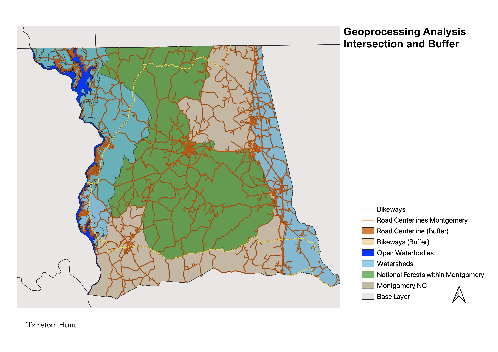

Intro to Geographic Info (GEOG 370) Course Projects
Homework 8: Geoprocessing Analysis
Tarleton Hunt
Research Question: How do buffers help with urban planning and wildlife conservation?
Background
Prior to creating this map, I used geoprocessing techniques to work at the scale of Montgomery County. I used the projection 32119 and altered all the data I collected into 32119 for a more accurate reading of North Carolina specifically. I then created a shapefile for Montgomery County in projection 32119 to keep it accurate. The data I collected was all on a larger scale, so I reduced it by using the intersection technique.
Methods and Results
I was interested in how we can use buffers to help with urban planning and wildlife conservation. I found data for bikeways and road centerlines and created buffers to illustrate the proximity of these places to nearby forestry. In addition, I added the national forests layer, open waterbodies, and watersheds to illustrate the locations related to roads and bikeways. By using geoprocessing tools like buffers, they can help with urban planning by allowing urban developers to look at the distance between roads and how that affects where people want to live in relation to water sources. In addition, using buffers can help by putting up barriers to keep wildlife from nearing dangerous roads. These buffers can help people know where to put fences to block animals from crossing.

Sources:
Bike Routes
National Forests
Waterbodies and Watersheds
Output Files:
Montgomery County
NC Shapefile
National Forests
Watersheds
Open Waterbodies
Bike Routes, North Carolina
Road Centerlines, North Carolina